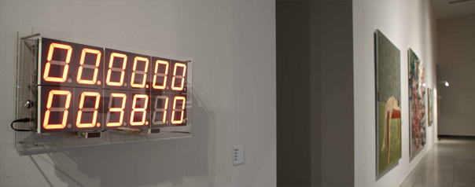
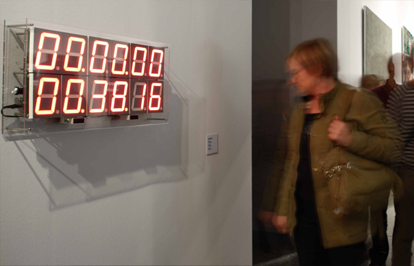

%
2007
Percentage its a digital counter comprising of 12 displays each containing 7 segments. This interactive work calculates and show the time viewers spend looking at it.
%
2007
Pieza interactiva que contabiliza el tiempo que es vista.
En una sociedad cada vez más mediatizada, los índices de audiencia y las estadísticas acaparan el protagonismo. "%" ironiza al respecto. Un contador numérico con 12 displays de 7 segmentos (segundos, minutos, horas, días, meses y años) registra el tiempo que el espectador observa la pieza.



| ← | ∀ | → |